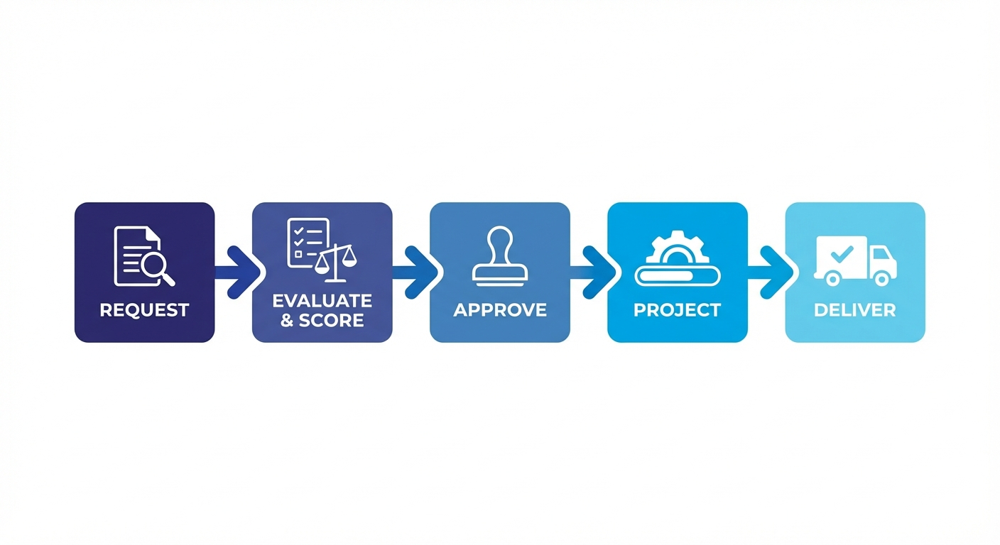

Portfolio Fast Track: From Request to Delivery¶
This guide walks you through the portfolio lifecycle -- from submitting your first request to delivering a finished project. It is designed to get you productive fast, not to cover every option.
Prefer a one-page summary?
All the key steps on a single A4 page -- print it, pin it, share it with your team.
For full details, see the Portfolio reference docs.
The Big Picture¶

Every initiative in KANAP follows the same flow:
| Stage | What Happens |
|---|---|
| Request | Someone submits an idea or need |
| Analyze & Score | A committee reviews feasibility, captures a recommendation, and scores priority |
| Approve | Decision-makers greenlight (or reject) it |
| Project | The approved request becomes a project with a team, timeline, and effort plan |
| Deliver | The team executes, logs time, and tracks progress to completion |
This pipeline ensures every initiative is evaluated fairly, prioritized transparently, and tracked consistently. No more pet projects jumping the queue.
Why this matters
The analysis and scoring step is what makes the difference between a wish list and a real portfolio. It gives leadership a defensible, data-driven basis for saying yes -- or no.
Step 1: Submit a Request¶
Go to Portfolio > Requests and click + New Request.
New requests open on Summary with the request property sidebar already visible. Start with the structural fields in the sidebar, then capture the narrative in Purpose.
Fill in the minimum details to get started:
| Field | What to enter |
|---|---|
| Name | A clear, concise title for the initiative |
| Source | Where did this come from? (Business unit, regulation, IT strategy...) |
| Category | The type of initiative (e.g., New Application, Infrastructure, Process Improvement) |
| Requestor | Who is asking for this? |
| Target Delivery Date | When is this ideally needed by? |
Then use the Purpose document on Summary to explain the business need and expected outcome in plain language. If you already have a brief in Word, use the Import button on the Purpose editor to pull the .docx file in directly -- no copy-paste needed.
Click Save. Your request enters the pipeline with status Pending Review.
Keep it lean
You can add deeper analysis, linked knowledge, and supporting evidence later. The goal right now is to get the request into the governed intake flow.
For all available fields and options, see Requests reference.
Step 2: Analyze and Score¶
This is the step that turns a backlog of ideas into a defensible portfolio. In the request workspace, this work is split between the Analysis tab and the Scoring tab.
Who Should Score?¶
Don't score alone
Scoring works best when done by a committee with diverse perspectives. Aim to include representatives from:
- IT Functional -- understands business processes and application landscape
- IT Technical -- understands infrastructure, architecture, and technical debt
- Cybersecurity -- assesses risk, compliance, and security implications
- Business -- validates strategic alignment and business value
A single person's score is an opinion. A committee's score is a decision framework.
Analysis Tab¶
Use Analysis to understand whether the request is viable enough to move forward.
Analysis combines four things:
- Impacted Business Processes so reviewers can see which operational areas the request touches
- Feasibility Review across seven dimensions
- Risks & Mitigations as a managed document (with DOCX import and export)
- Analysis Recommendation as the formal committee verdict
Feasibility Analysis (7 Dimensions)¶
Beyond value, you need to assess whether this is actually doable. The feasibility analysis covers seven dimensions:
| Dimension | What you're checking |
|---|---|
| Technical Feasibility | Is the proposed approach technically sound? |
| Integration & Compatibility | Does it fit the existing landscape and interfaces? |
| Infrastructure Needs | Are hosting, platform, or operations changes realistic? |
| Security & Compliance | Are controls, obligations, and risks understood? |
| Resource & Skills | Do you have the people and expertise? |
| Delivery Constraints | Are timing, sequencing, and dependencies manageable? |
| Change Management | Can the organization absorb the change? |
Each dimension is rated from Not assessed to Blocker. Summary then surfaces the strongest concern level so major issues stay visible even when nobody is parked on the Analysis tab.
Scoring Tab¶
Use Scoring to rate the request against your tenant's configured portfolio criteria.
The exact criterion names and weights may vary by tenant, because they come from Portfolio > Settings. KANAP calculates the weighted priority automatically, and some tenants also use a mandatory-bypass rule for work that must jump to the top of the queue.
The Analysis Recommendation¶
After reviewing feasibility and scoring, write the Analysis Recommendation. This is a short narrative summary -- typically 2-4 sentences -- that captures the committee's verdict:
Good recommendation examples
- "High strategic value, strong business case. Technical feasibility is moderate due to legacy integration. Recommend approval with a proof-of-concept phase."
- "Low urgency, limited business impact. Resource constraints make Q2 delivery unlikely. Recommend deferral to H2."
Submitting the recommendation publishes a formal decision into Activity, so the rationale and any linked status change stay attached to the request history.
The combination of scores + feasibility + recommendation gives decision-makers everything they need to approve or reject -- without having to sit through a two-hour presentation.
Transparency is the point
When stakeholders ask "why was my request rejected?" or "why did that project get priority?", the analysis and scoring record provides the answer. This is what makes the pipeline fair.
For detailed scoring configuration and weight management, see Settings reference.
Step 3: Approve and Convert¶
Once analysis and scoring are complete, it's decision time.
- Review the scores, feasibility, and recommendation
- Move the request through Candidate, On Hold, or Rejected as needed while the review is still in progress
- Set the status to Approved when the request is ready to enter delivery
- Click Convert to Project
Seamless handoff
When you convert a request to a project, KANAP opens a conversion dialog where you can confirm the project name, planned dates, and initial effort. The request purpose is shown for reference, and linked request data carries forward into the project.
The request status changes to Converted, and a new project is created and linked back to the original request.
For requests that are not ready to convert, keep them in Candidate, move them to On Hold, or set them to Rejected with a reason.
See Requests reference for all status transitions.
Step 4: Set Up Your Project¶
Your new project inherits the request context, but it still needs execution setup.
Go to Portfolio > Projects and open your newly created project. The project workspace has seven tabs -- Summary, Activity, Timeline, Progress, Tasks, Scoring, and Knowledge -- with a persistent Project Properties sidebar for core fields, team, and relations.
Sidebar -- Assign Your People and Core Structure¶
Use the Project Properties sidebar to set up the core roles:
| Role | Who | Purpose |
|---|---|---|
| Business Sponsor | Senior business leader | Accountable for business outcomes |
| IT Sponsor | Senior IT leader | Removes delivery blockers and backs the initiative |
| IT Lead | Technical project manager | Drives IT delivery |
| Business Lead | Business-side project manager | Drives business readiness and adoption |
| IT Contributors / Business Contributors | Team members doing the work | Feed delivery context, allocations, and scope filters |
Contributors must be configured first
For capacity planning to work, every contributor must be set up in Portfolio > Contributors with:
- Their team assignment
- Availability (days per month)
- Skills
- Classification defaults (Source, Category, Stream, Company) so new tasks and requests are pre-filled automatically
Without team, availability, and skills data, the roadmap generator can't calculate capacity, and your planning will be flying blind. See the Contributors reference.
The same sidebar also keeps Core Properties and Relations visible while you work, so you no longer need separate Team or Relations tabs.
Summary Tab -- Purpose and Project Cockpit¶
Summary is the project cockpit. It shows the current status, delivery window, effort consumption, team coverage, and latest activity in one pass. The Purpose editor is here too -- if your project brief already exists as a Word document, use the Import button to pull the .docx in directly.
Progress Tab -- Validate Effort and Allocations¶
Use Progress to confirm the effort that will drive delivery planning:
- IT Effort (MD) -- Total man-days expected from IT contributors
- Business Effort (MD) -- Total man-days expected from business contributors
These numbers feed the roadmap
The roadmap generator uses these effort estimates, combined with contributor availability, to automatically schedule projects on the timeline. More accurate estimates = better roadmaps.
Timeline Tab -- Apply a Phase Template (Optional)¶
If your organization has defined phase templates (e.g., "Standard Project", "Agile Sprint Cycle"), you can apply one here to instantly scaffold your project timeline with predefined phases and milestones. The timeline can be viewed as a table or a Gantt chart.
You can also set dates manually or skip this entirely for simpler initiatives.
See Projects reference for all project configuration options.
Step 5: Track Execution¶
Now the real work begins. As the project progresses, keep KANAP updated.
Update Progress¶
Use the Execution Progress slider on the Progress tab to reflect how far along the project is. This is a simple percentage (0-100%) that feeds dashboards and reports.
Move the project through statuses as work advances. In practice, most projects move from Waiting List or Planned into active execution:
Waiting List / Planned --> In Progress --> In Testing --> Done
Log Time -- This is Critical¶
No time logging = no automatic scheduling
Time logging isn't just for reporting -- it directly powers the roadmap generator.
There are two places to log time:
- Progress tab -- Log project-level overhead time (meetings, coordination, management)
- Tasks -- Log task-specific time against individual work items
Here's why this matters:
Time logged --> Contributor time statistics --> Historical capacity data
--> Roadmap generator (historical mode)
--> Accurate future scheduling
The roadmap generator has a historical capacity mode that uses actual logged time to understand how much each contributor really delivers per month (as opposed to their theoretical availability). Without time data, the generator falls back to theoretical estimates -- which are almost always optimistic.
Make it a habit
Encourage team members to log time weekly. Even rough entries are far better than nothing. The data compounds over time and makes each roadmap iteration more accurate.
Statuses¶
| Status | Meaning |
|---|---|
| Waiting List | Approved but not scheduled into active work yet |
| Planned | Scheduled and prepared, but execution has not started |
| In Progress | Active work is happening |
| In Testing | Deliverables are being validated |
| On Hold | Temporarily paused (capture the reason) |
| Done | All deliverables accepted, project complete |
| Cancelled | Stopped before completion |
See Projects reference for details on each status.
Step 6: Structure with Phases and Tasks¶
For larger projects, you'll want more granular tracking.
Phases¶
Phases break the project into logical stages (e.g., Analysis, Development, Testing, Deployment).
- From template: Apply a phase template from the Timeline tab to get a predefined structure
- Custom: Add phases manually with names, start/end dates, and owners
Each phase can have its own status, dates, and milestone behavior. The Timeline tab lets you view the phase structure as a table or a Gantt chart.
Tasks¶
Within each phase (or at the project level), create tasks for specific work items. Open the Tasks tab in the project workspace to manage them.
- Assign tasks to contributors
- Set due dates, priorities, and task types
- Write detailed descriptions using the markdown editor -- or import a
.docxfile directly into the Description field - Log time directly against tasks (IT or Business category)
- Link tasks to phases for structured tracking
- Attach Knowledge documents from the task sidebar for reference material
Tasks can also be created directly from a timeline phase using the [+] shortcut, which pre-links the task to both the project and the selected phase.
Project tasks must log time before closing
You cannot mark a project task as Done until at least some time has been logged. This keeps effort tracking honest.
Milestones¶
Mark key checkpoints -- go/no-go decisions, deliverable deadlines, or external dependencies.
Milestones appear on the project timeline and in reports, giving stakeholders clear visibility into upcoming decision points. They can be created as standalone milestones or by enabling milestone tracking on a phase.
Start simple, add structure as needed
You don't need phases and tasks for every project. Small initiatives can be tracked with just the progress slider and status. Add structure when the project is complex enough to need it.
For full details on phases, tasks, and milestones, see Projects reference and Tasks reference.
How It All Connects¶
Every piece of data you enter feeds into something bigger. Here's why it's worth the effort:
Automatic Roadmap Scheduling¶
The roadmap generator takes your project effort estimates, contributor availability, and historical time data to automatically schedule projects across the timeline. No more manual Gantt chart gymnastics.
See Planning reference.
Capacity Heatmaps¶
Contributor availability and project assignments combine to show you who's overloaded and who has bandwidth -- across teams and time periods. This prevents the classic "everyone is assigned to 5 projects at 100%" problem.
Bottleneck Analysis¶
When multiple projects compete for the same contributors or skills, KANAP highlights the bottleneck so you can make trade-offs before they become crises.
Executive Reporting¶
Priority scores, project status, progress, budget, and timeline data roll up into portfolio-level reports that give leadership a clear picture without manual PowerPoint creation. The reporting hub includes a Status Change Report, Capacity Heatmap, and Weekly Report.
See Reporting reference.
Quick Reference¶
| I want to... | Go to... |
|---|---|
| Submit a new idea | Portfolio > Requests > + New |
| Score a request | Open request > Scoring tab |
| Assess feasibility | Open request > Analysis tab |
| Set the project team | Open project > Project Properties sidebar > Team |
| Import a Word document | Open request/project/task > Import button on Purpose or Description |
| See the project pipeline | Portfolio > Planning |
| Check team capacity | Portfolio > Planning > Capacity view, or Portfolio > Reporting > Capacity Heatmap |
| Log time on a project | Open project > Progress tab or Tasks |
| Generate a roadmap | Portfolio > Planning > Roadmap Generator |
| View reports | Portfolio > Reporting |
| Configure scoring weights | Portfolio > Settings > Scoring Criteria |
| Set up contributors | Portfolio > Contributors |
| Set classification defaults | Portfolio > Contributors > open profile > Defaults tab |
You're ready
You now know the full lifecycle from request to delivery. Start with a request, score it properly, and let KANAP handle the rest. For detailed documentation on every feature, explore the Portfolio Management section.